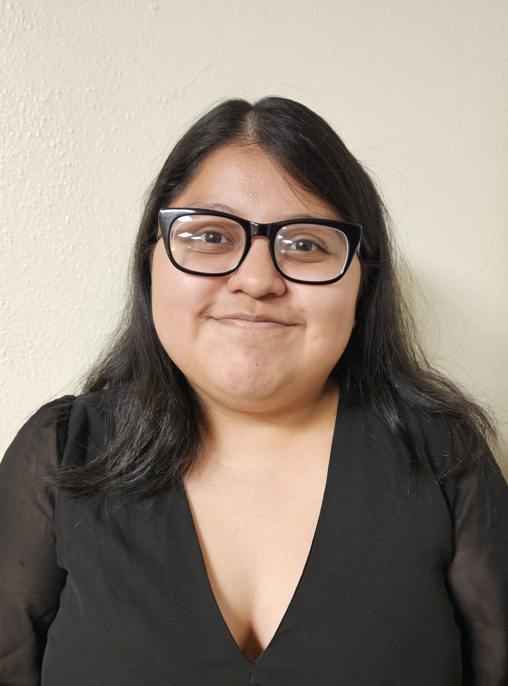

Brenda Martinez Martinez

Topic: Predictive Data Analytics — Using Data to Anticipate Community Outcomes
Brenda Martinez Martinez is a data scientist and community researcher who specializes in applying predictive analytics to social and environmental challenges. In this talk Brenda will demonstrate how data-driven models can forecast a range of situations — from resource needs and service demand to early warning signals for emergencies — and how communities can use those forecasts to plan, respond, and allocate resources more effectively.
The presentation mixes accessible case studies with practical methodology: selecting and preparing local datasets, choosing appropriate modeling approaches, evaluating model performance, and communicating uncertainty to stakeholders. Brenda will emphasize ethical considerations, transparency, and ways to turn model outputs into clear, actionable decisions for community leaders and program managers.
Takeaways
- Fundamentals of predictive modeling and when to use them.
- How to identify, collect, and prepare community data for analysis.
- Translating model outputs into actionable plans while communicating uncertainty and ethical constraints.